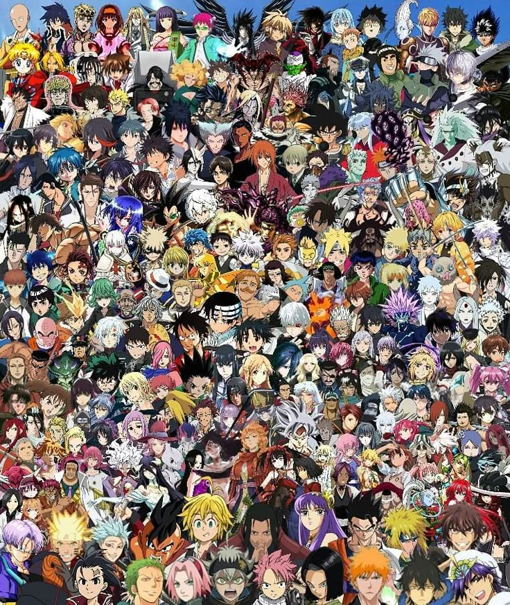
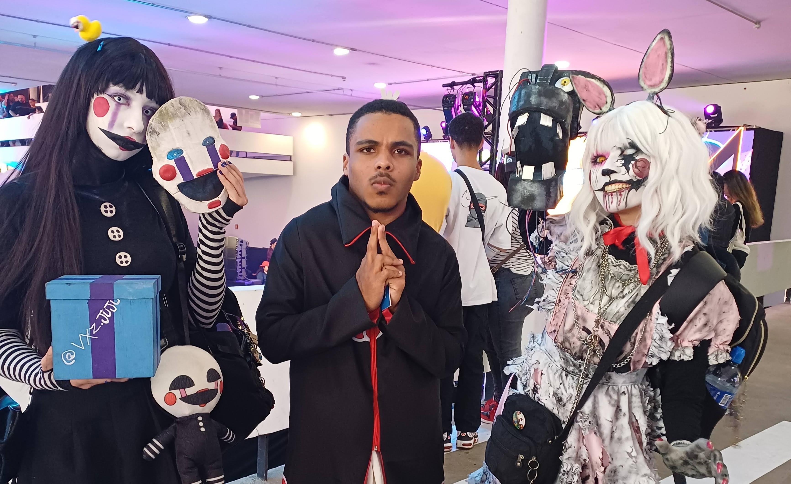
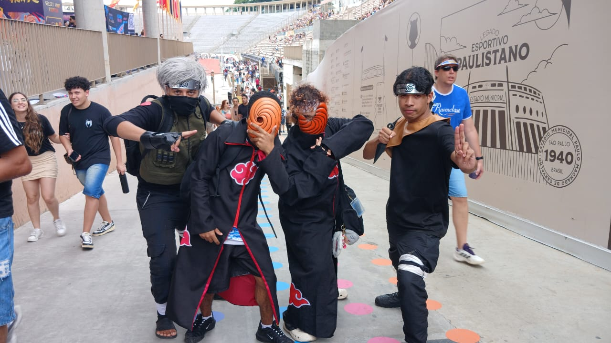

Sobre o projeto
O que são animes?
Animes são animações japonesas que, muitas vezes, adaptam mangás (as histórias em quadrinhos do Japão). Eles abrangem diversos gêneros e públicos — como shounen, shoujo e mahou shoujo — e acabam ensinando muito sobre a cultura e o estilo de vida japonês

Animes na minha vida
Gosto de animes desde pequeno e, durante muito tempo, não conhecia pessoas ao meu redor que compartilhassem desse mesmo interesse. Por conta disso, quando era mais novo, criei um canal no YouTube chamado Anime TV e Giganime, com o objetivo de compartilhar esse universo com outras pessoas e apresentar os animes para quem ainda não os conhecia. Os animes sempre fizeram parte da minha vida, e poder encontrar pessoas que compartilham desse mesmo gosto se tornou algo muito especial para mim. Participar de eventos de anime me proporcionou justamente essa oportunidade: conhecer pessoas novas, fazer amizades e compartilhar experiências com quem também gosta desse universo. Essas experiências me fizeram perceber que um interesse que antes eu compartilhava principalmente pela internet poderia se tornar uma oportunidade de criar conexões e viver momentos inesquecíveis pessoalmente. .
Minha história com os animes
Gostava de animes e ninguém ao meu redor conhecia
Meu primeiro anime, visto nas reprises da TV e no YouTube
Aplicativo gratuito que parou de funcionar em 2025
Muita gente descobriu os animes, mas eu ainda não tinha com quem dividir
Roupas de anime e novos amigos que também gostavam
Primeiro evento, o Orgulho Nerd, com uma amiga
Show do 7 Minutoz
Orgulho Nerd, 21 e 22 de novembro
Eventos que eu fui

Meu primeiro evento de anime foi gratuito e aconteceu no Parque Ibirapuera. Para essa experiência, convidei alguns amigos com quem tinha mais confiança, Frank e Isabelly, para que pudéssemos aproveitar esse momento juntos. Foi a primeira vez que participei de um evento desse tipo e, sinceramente, foi uma experiência que amei muito! Poder estar em um ambiente com pessoas que compartilham do mesmo gosto por animes tornou tudo ainda mais especial. Essa primeira experiência despertou em mim uma vontade ainda maior de conhecer outros eventos de anime, explorar novas experiências e aproveitar cada vez mais esse universo que tanto gosto. Foi um momento que marcou o início de uma nova experiência na minha vida e que me fez perceber o quanto eu gostaria de continuar participando de eventos como esse.
Um dos momentos mais felizes da minha vida foi poder assistir ao vivo a um dos primeiros artistas de música geek que escutei. Foi uma experiência que significou muito para mim, pois ouvir suas músicas ao vivo era algo que eu desejava realizar. Mesmo tendo ido sozinho ao evento, consegui fazer novas amizades e aproveitar cada momento. Cantei, gritei e me diverti tanto que acabei ficando muito rouco! Foi uma experiência inesquecível, que me mostrou que, mesmo indo sozinho, é possível conhecer pessoas novas, criar boas lembranças e realizar algo que sempre quis. Sem dúvidas, foi uma das realizações mais felizes da minha vida.

Esse foi meu segundo evento de anime e, dessa vez, tive a oportunidade de aproveitar ainda mais a experiência. Convidei meus amigos Daniel, Matheus, Frank e Isa para irem comigo, assim como na minha primeira experiência, e pude compartilhar esse momento com pessoas próximas. Dessa vez, interagi muito mais com as pessoas que estavam fazendo cosplay, conversei com várias delas e até consegui pegar o contato de algumas. Foi uma experiência muito legal, pois pude conhecer pessoas novas e me sentir ainda mais à vontade naquele ambiente. Também participei de uma batalha de Anime Rap que foi muito boa e de uma roda punk, que tornou o evento ainda mais divertido e cheio de energia. Essa segunda experiência foi importante para mim, pois percebi que estava me soltando cada vez mais e aproveitando os eventos de anime de uma maneira diferente. Além de compartilhar momentos com meus amigos, tive a oportunidade de conhecer novas pessoas, fazer amizades e criar lembranças que quero levar comigo.